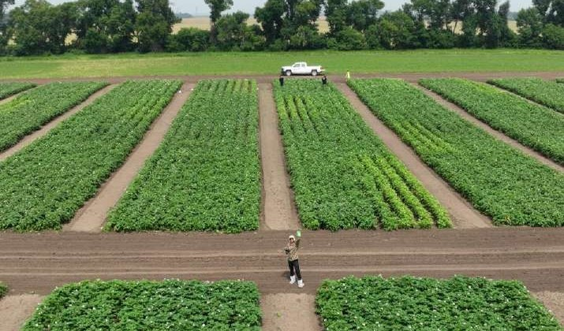

I study when sensing can extend the value of ground measurements and what it takes to validate those predictions for agricultural use.
Field trials · UAV multispectral & LiDAR
Can one drone survey help estimate both nitrogen status and yield?
I coordinated randomized field trials in irrigated Russet Burbank potatoes and brought together drone imagery, canopy height, petiole nitrate, and measured harvest yield. We used 172 plots from the 2024 and 2025 seasons for the joint modelling study.
Joint modelling improved yield estimates on held-out plots. Nitrogen gains depended on model architecture, and single-date imagery left substantial variation in tuber yield unexplained.
Multi-task model error was 3.13 t/ha. Results apply to the study’s held-out plots from two Manitoba seasons.
Field-to-lab spectroscopy
Making field spectra more reliable
We tested petiole nitrate prediction from canopy, fresh-leaf, and dried-tissue spectra. Aligning field spectra to a fresh-leaf reference improved the field model.
I contributed to a study testing whether fusing PlanetScope SuperDove and refined Sentinel-2 imagery could improve soil organic carbon estimates. The best model combined fused imagery and terrain attributes using Gaussian process regression.
Working with field teams, research partners, and producers in Manitoba.
Design and deliver trials
Coordinated plot trials, flights, crop sampling, logistics, and quality checks across three potato seasons near Carberry. The Manitoba Crop Diversification Centre managed the plots.
Develop funded partnerships
Wrote the successful 24-month Mitacs Accelerate proposal with Planet Labs to evaluate Tanager hyperspectral imagery against field and laboratory measurements of Prairie agricultural soils.
Train teams and share results
Trained students, technicians, and researchers in UAV mission planning and field protocols, mentored a visiting researcher for six months, and shared results through producer demonstrations and conferences.

Potato trial plotsField demonstrations and outreachHyperspectral research presentation
Doctoral research support included Mitacs and the Keystone Potato Producers Association of Manitoba.
Publications
Selected papers
Journal articles and a data paper on crop sensing, machine learning, and soil science.
Plot-level VNIR–SWIR hyperspectral reflectance dataset for potato under nitrogen fertilization and field-to-laboratory measurement conditions
VNIR–SWIR hyperspectral spectroscopy for nitrogen assessment in potato crops: Deep learning and regression models across field and laboratory conditions
Chatraei Azizabadi et al. · Smart Agricultural Technology
Modeling and identification of affective parameters on cadmium’s durability and evaluating cadmium pollution indicators caused by using chemical fertilizers in long term
Co-authored · Environmental Geochemistry and Health